library(yingtools2)
library(broom)
library(modelr)
library(tidyverse)
mt <- mtcars %>% mutate(cyl=factor(cyl))Modelling
Linear Regression
Linear Regression (single var)
model <- lm(mpg ~ hp,data=mt)
mt$yhat <- predict(model)
tidy(model)# A tibble: 2 × 5
term estimate std.error statistic p.value
<chr> <dbl> <dbl> <dbl> <dbl>
1 (Intercept) 30.1 1.63 18.4 6.64e-18
2 hp -0.0682 0.0101 -6.74 1.79e- 7ggplot(mt) +
geom_point(aes(x=hp,y=mpg)) +
geom_line(aes(x=hp,y=yhat),color="red")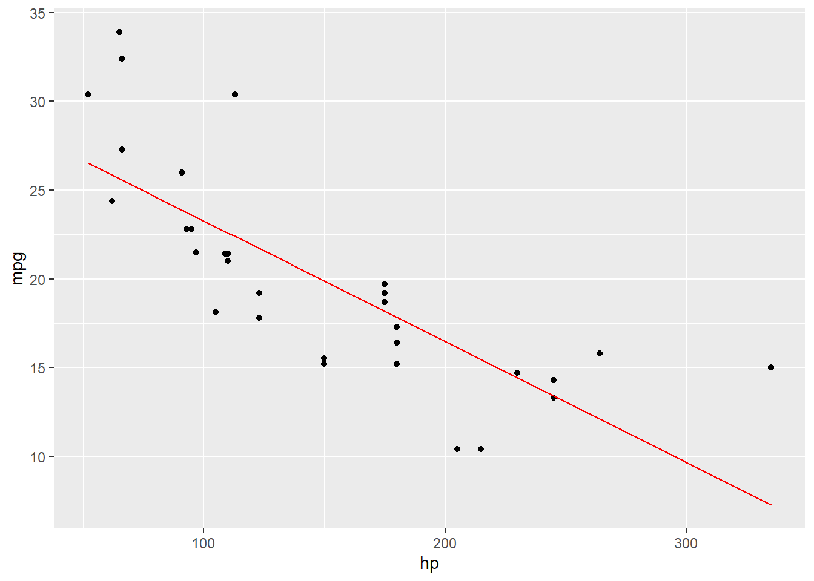
Linear Regression, show confidence and prediction (single var)
model <- lm(mpg ~ hp,data=mt)
ci <- predict(model,interval="confidence") %>% cbind(mt)
pi <- predict(model,interval="prediction") %>% cbind(mt)
tidy(model)# A tibble: 2 × 5
term estimate std.error statistic p.value
<chr> <dbl> <dbl> <dbl> <dbl>
1 (Intercept) 30.1 1.63 18.4 6.64e-18
2 hp -0.0682 0.0101 -6.74 1.79e- 7ggplot(mt) +
geom_point(aes(x=hp,y=mpg)) +
geom_line(data=pi,aes(x=hp,y=fit,color="predicted")) +
geom_ribbon(data=pi,aes(x=hp,ymin=lwr,ymax=upr,fill="predicted"),alpha=0.35,show.legend=FALSE) +
geom_line(data=ci,aes(x=hp,y=fit,color="confidence")) +
geom_ribbon(data=ci,aes(x=hp,ymin=lwr,ymax=upr,fill="confidence"),alpha=0.35,show.legend=FALSE)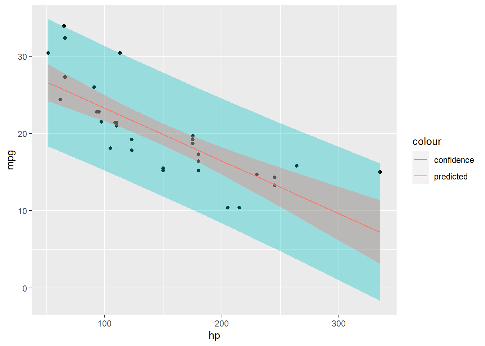
Linear Regression (multiple vars)
model <- lm(mpg ~ hp + cyl, data=mt)
tidy(model)# A tibble: 4 × 5
term estimate std.error statistic p.value
<chr> <dbl> <dbl> <dbl> <dbl>
1 (Intercept) 28.7 1.59 18.0 5.92e-17
2 hp -0.0240 0.0154 -1.56 1.30e- 1
3 cyl6 -5.97 1.64 -3.64 1.09e- 3
4 cyl8 -8.52 2.33 -3.66 1.03e- 3pdata <- tibble(hp=seq_range(mt$hp,n=200)) %>%
expand_grid(cyl=mt$cyl)
pdata$yhat <- predict(model,newdata=pdata)
ggplot() +
geom_point(data=mt, aes(x=hp,y=mpg,color=cyl)) +
geom_line(data=pdata, aes(x=hp,y=yhat,color=cyl))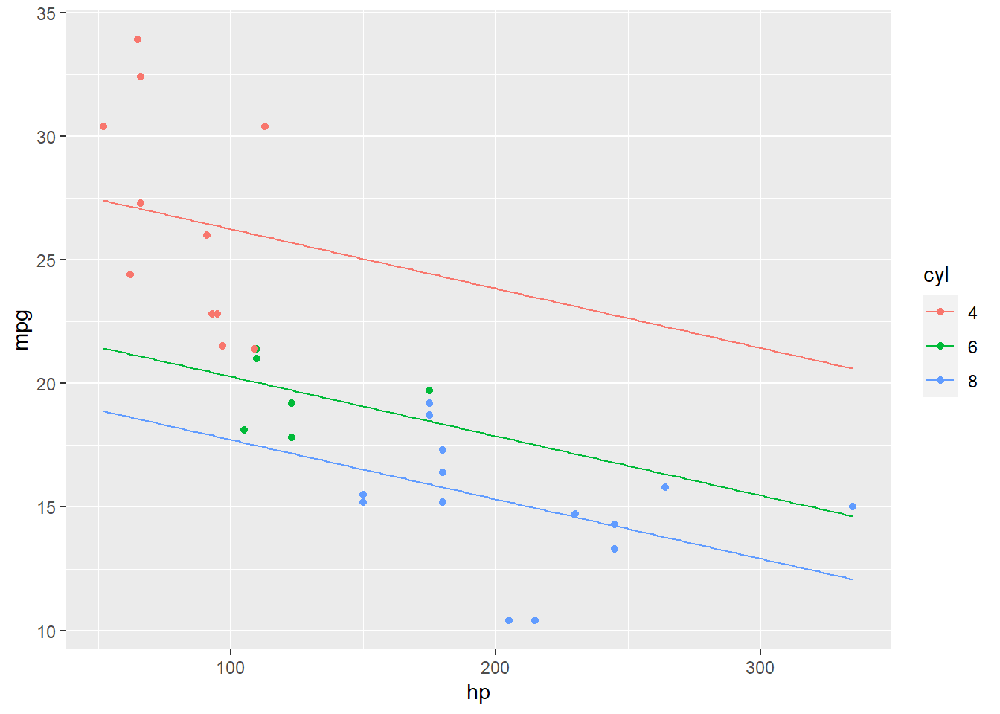
Linear Regression (multiple vars, with interaction)
model <- lm(mpg ~ hp + cyl + hp*cyl, data=mt)
tidy(model)# A tibble: 6 × 5
term estimate std.error statistic p.value
<chr> <dbl> <dbl> <dbl> <dbl>
1 (Intercept) 36.0 3.89 9.25 0.00000000104
2 hp -0.113 0.0457 -2.47 0.0206
3 cyl6 -15.3 7.43 -2.06 0.0496
4 cyl8 -17.9 5.26 -3.40 0.00216
5 hp:cyl6 0.105 0.0685 1.54 0.137
6 hp:cyl8 0.0985 0.0486 2.03 0.0531 pdata <- tibble(hp=seq_range(mt$hp,n=200)) %>%
expand_grid(cyl=mt$cyl)
pdata$yhat <- predict(model,newdata=pdata)
ggplot() +
geom_point(data=mt, aes(x=hp,y=mpg,color=cyl)) +
geom_line(data=pdata, aes(x=hp,y=yhat,color=cyl))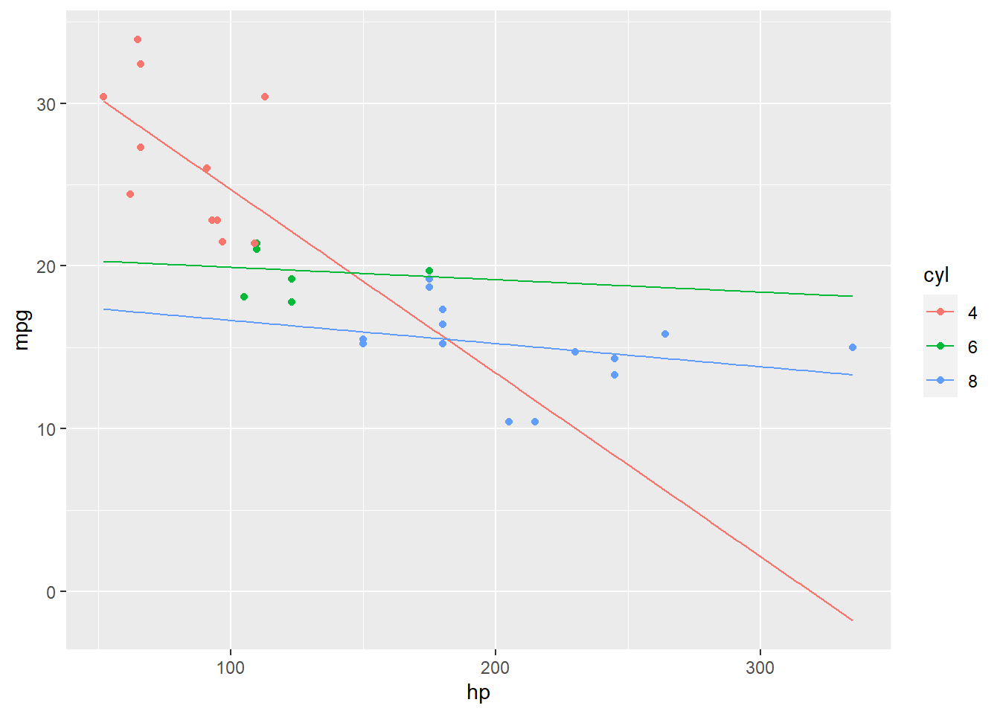
Nonlinear Regression
Package minpack.lm uses Levenberg-Marquardt algorithm, which seems to be more forgiving compared with nls.
library(minpack.lm)
model <- nlsLM(conc ~ a * exp(-b*time), start=list(a=1,b=1), data=Indometh)
tidy(model)# A tibble: 2 × 5
term estimate std.error statistic p.value
<chr> <dbl> <dbl> <dbl> <dbl>
1 a 2.78 0.154 18.1 8.24e-27
2 b 1.35 0.0994 13.6 1.58e-20pdata <- tibble(time=seq_range(Indometh$time,n=200))
pdata$yhat <- predict(model,newdata=pdata)
ggplot() +
geom_point(data=Indometh, aes(x=time,y=conc)) +
geom_line(data=pdata, aes(x=time,y=yhat),color="red")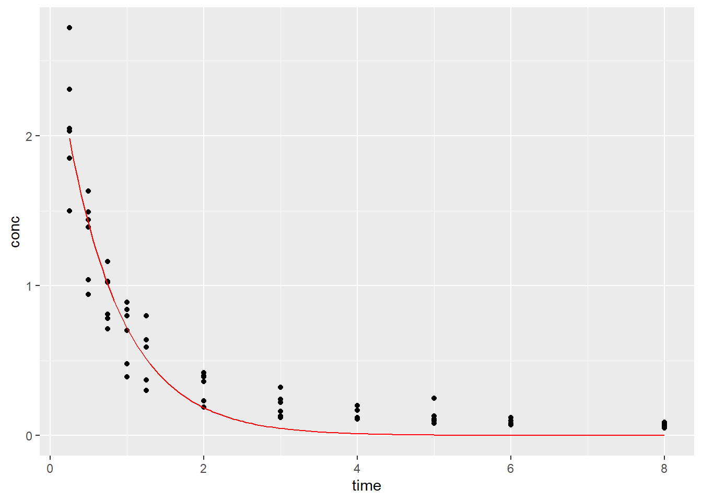
Logistic Regression
mt <- mtcars %>% mutate(gas.guzzler=as.numeric(mpg<22.5))
model <- glm(gas.guzzler ~ disp + am, data=mt,family="binomial")
tidy(model, exponentiate = TRUE)# A tibble: 3 × 5
term estimate std.error statistic p.value
<chr> <dbl> <dbl> <dbl> <dbl>
1 (Intercept) 0.00000705 6.01 -1.97 0.0483
2 disp 1.09 0.0405 2.07 0.0389
3 am 4.56 1.83 0.830 0.406 pdata <- crossing(disp=seq_range(mt$disp,n=200),
am=mt$am)
pdata$yhat <- predict(model,newdata=pdata,type="response")
ggplot() +
geom_point(data=mt,aes(x=disp,y=gas.guzzler,color=factor(am))) +
geom_line(data=pdata, aes(x=disp,y=yhat,color=factor(am)))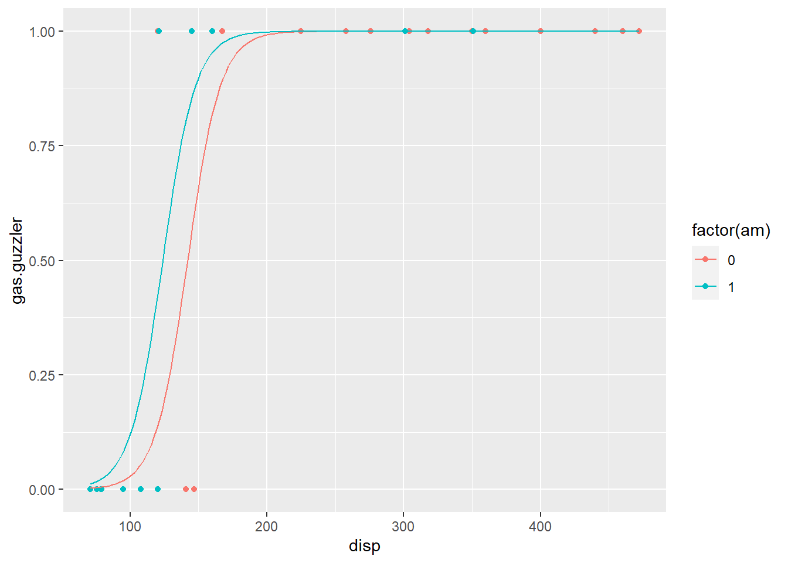
Penalized Regression
Ridge Regression
Use ridge regression (a.k.a. L2 regularization) to fit a model in order to deal with multicollinearity and overfitting. A penalty factor \(\lambda\) is used to minimize high coefficients. \(\lambda\) = 0 is equivalent to ordinary least squares, and higher values means higher penalty. Using the glmnet package, set alpha = 0 for ridge regression.
Determine best \(\lambda\) (produces lowest mean squared error) using k-fold cross-validation, cv.glmnet(). Note that predictors are standardized by default.
library(glmnet)
y <- mtcars$hp
x <- mtcars %>% dplyr::select(mpg, wt, drat, qsec) %>% as.matrix()
#find optimal lambda value that minimizes test MSE
cv_model <- cv.glmnet(x, y, alpha = 0)
best_lambda <- cv_model$lambda.min
model <- glmnet(x, y, alpha = 0, lambda = best_lambda)
coef(model)5 x 1 sparse Matrix of class "dgCMatrix"
s0
(Intercept) 478.8764904
mpg -3.2811601
wt 20.8962259
drat 0.5685862
qsec -18.7991749#calculate R-squared
y_predicted <- predict(model, s = best_lambda, newx = x)
sst <- sum((y - mean(y))^2)
sse <- sum((y_predicted - y)^2)
#find R-Squared
rsq <- 1 - sse/sst
rsq[1] 0.803823Lasso Regression
Lasso regression is similar but penalty is based on sum of absolute values coefficients. Setting alpha = 1 will perform Lasso (Elastic net is intermediate values for alpha). Note that Lasso can shrink coefficients down to zero.
y <- mtcars$hp
x <- mtcars %>% select(mpg, wt, drat, qsec) %>% as.matrix()
model <- glmnet(x, y, alpha = 1)
#find optimal lambda value that minimizes test MSE
cv_model <- cv.glmnet(x, y, alpha = 1)
best_lambda <- cv_model$lambda.min
model <- glmnet(x, y, alpha = 1, lambda = best_lambda)
coef(model)5 x 1 sparse Matrix of class "dgCMatrix"
s0
(Intercept) 485.152675
mpg -2.936266
wt 21.698919
drat .
qsec -19.569135#calculate R-squared
y_predicted <- predict(model, s = best_lambda, newx = x)
sst <- sum((y - mean(y))^2)
sse <- sum((y_predicted - y)^2)
#find R-Squared
rsq <- 1 - sse/sst
rsq[1] 0.8043193Mixed Effects
library(lme4)
library(nlme)
view.predict <- function(fit) {
data1 %>% mutate(pred_dist = fitted(fit)) %>%
ggplot(aes(x=age, y=pred_dist, group=Subject, color=Subject)) + theme_classic() +
geom_line(size=1)
}
data1 <- Orthodont %>% mutate(Subject=factor(Subject,ordered=FALSE))
data1 %>%
ggplot(aes(x=age, y=distance, group=Subject, color=Subject, linetype=Sex)) +
geom_line(size=1) + theme_classic()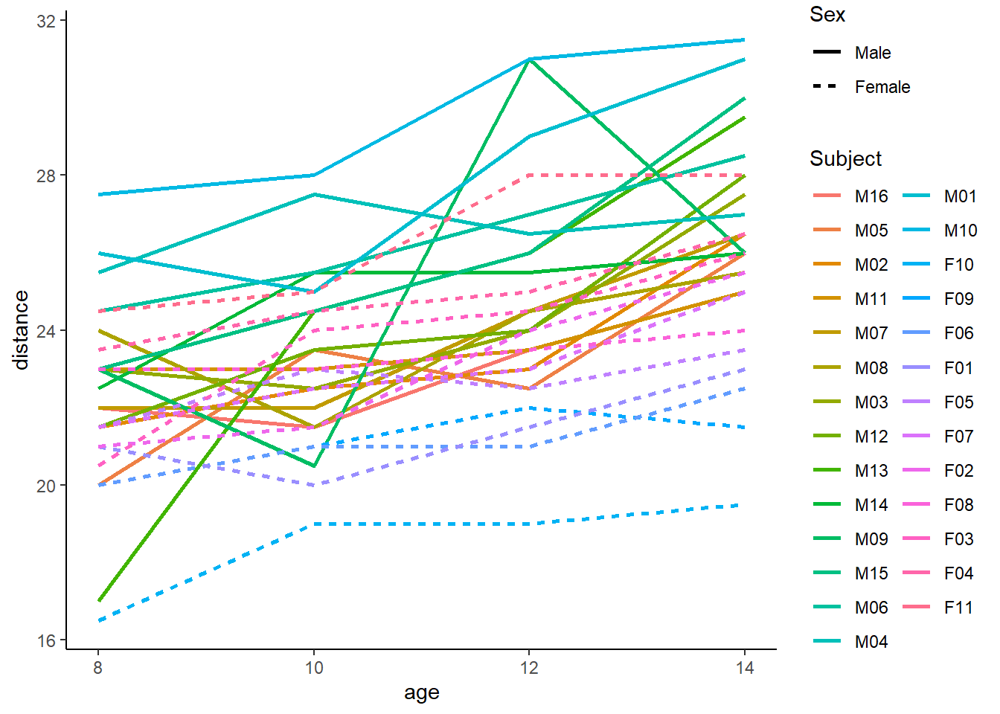
# null model
mod1 <- lmer(distance ~ (1|Subject), data=data1, REML=F)
summary(mod1)Linear mixed model fit by maximum likelihood ['lmerMod']
Formula: distance ~ (1 | Subject)
Data: data1
AIC BIC logLik deviance df.resid
521.5 529.5 -257.7 515.5 105
Scaled residuals:
Min 1Q Median 3Q Max
-3.2391 -0.5248 -0.1103 0.4827 2.7734
Random effects:
Groups Name Variance Std.Dev.
Subject (Intercept) 3.567 1.889
Residual 4.930 2.220
Number of obs: 108, groups: Subject, 27
Fixed effects:
Estimate Std. Error t value
(Intercept) 24.0231 0.4216 56.98view.predict(mod1)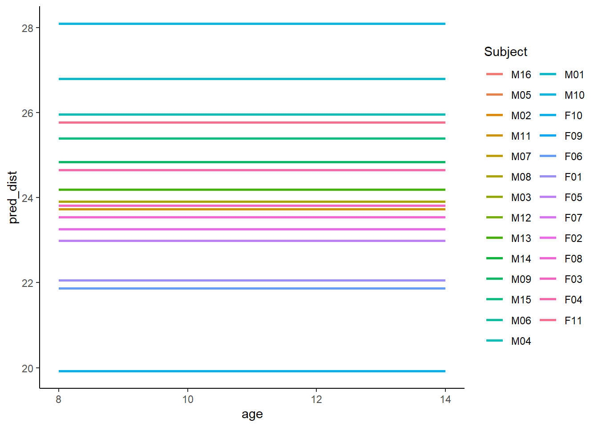
# Random intercept model
mod2 <- lmer(distance ~ age + (1|Subject), data=data1, REML=F)
summary(mod2)Linear mixed model fit by maximum likelihood ['lmerMod']
Formula: distance ~ age + (1 | Subject)
Data: data1
AIC BIC logLik deviance df.resid
451.4 462.1 -221.7 443.4 104
Scaled residuals:
Min 1Q Median 3Q Max
-3.6870 -0.5386 -0.0123 0.4910 3.7470
Random effects:
Groups Name Variance Std.Dev.
Subject (Intercept) 4.294 2.072
Residual 2.024 1.423
Number of obs: 108, groups: Subject, 27
Fixed effects:
Estimate Std. Error t value
(Intercept) 16.76111 0.79456 21.09
age 0.66019 0.06122 10.78
Correlation of Fixed Effects:
(Intr)
age -0.848view.predict(mod2)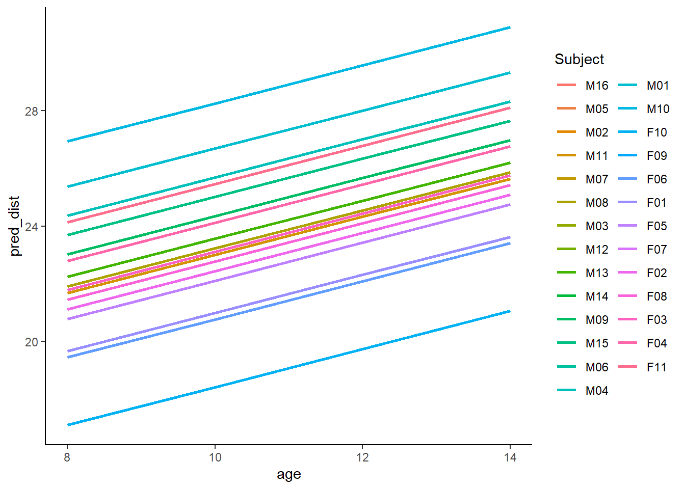
# Random intercept and random slope (independent)
mod3 <- lmer(distance ~ age + (1|Subject) + (0+age|Subject), data=data1, REML=F)
summary(mod3)Linear mixed model fit by maximum likelihood ['lmerMod']
Formula: distance ~ age + (1 | Subject) + (0 + age | Subject)
Data: data1
AIC BIC logLik deviance df.resid
449.7 463.1 -219.9 439.7 103
Scaled residuals:
Min 1Q Median 3Q Max
-3.7542 -0.5056 0.0181 0.5216 3.8017
Random effects:
Groups Name Variance Std.Dev.
Subject (Intercept) 1.82570 1.3512
Subject.1 age 0.02141 0.1463
Residual 1.85944 1.3636
Number of obs: 108, groups: Subject, 27
Fixed effects:
Estimate Std. Error t value
(Intercept) 16.76111 0.70816 23.67
age 0.66019 0.06509 10.14
Correlation of Fixed Effects:
(Intr)
age -0.822view.predict(mod3)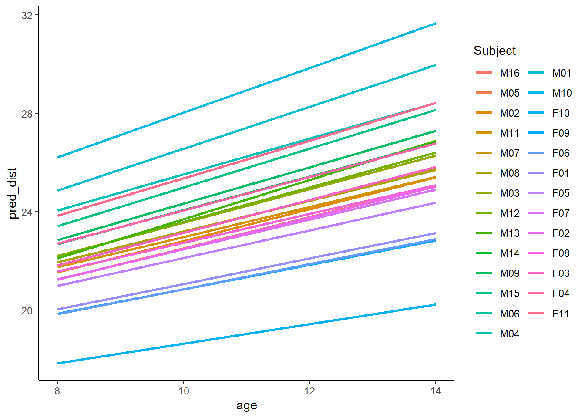
# Random intercept and random slope (correlated)
mod4 <- lmer(distance ~ age + (1+age|Subject), data=data1, REML=F)
summary(mod4)Linear mixed model fit by maximum likelihood ['lmerMod']
Formula: distance ~ age + (1 + age | Subject)
Data: data1
AIC BIC logLik deviance df.resid
451.2 467.3 -219.6 439.2 102
Scaled residuals:
Min 1Q Median 3Q Max
-3.3060 -0.4874 0.0076 0.4822 3.9228
Random effects:
Groups Name Variance Std.Dev. Corr
Subject (Intercept) 4.81397 2.1941
age 0.04619 0.2149 -0.58
Residual 1.71623 1.3100
Number of obs: 108, groups: Subject, 27
Fixed effects:
Estimate Std. Error t value
(Intercept) 16.76111 0.76076 22.032
age 0.66019 0.06992 9.442
Correlation of Fixed Effects:
(Intr)
age -0.848view.predict(mod4)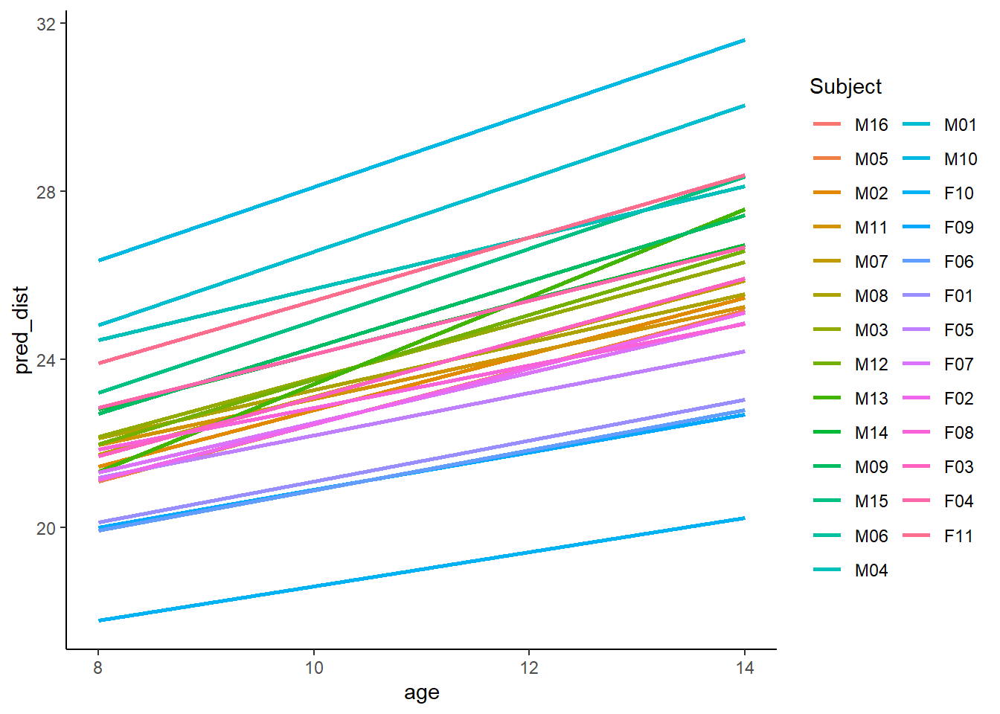